SMU DDS Case Study:Advanced analytics on Budweiser data
Simerpreet Reddy
Jan/22/2020
Purpose
The purpose of the code is to perform anlaysis on Budweiser Beers and Breweries data. Beers data provides the different measures of the Beer, such as it’s name, ABV(Alcohal By Volume), IBU(Internation Bitternes Unit), Beer Style and the Brewery it comes from.
Breweries data on the other hand provides the name of the Brewery along with the City and State it is located in. Analysis is done to provide insights from Beers and Breweries data on following aspects: Brewery and beer distribution by State. Comparison of ABV and IBU by-
State, and Beer Style – IPA and Other Ales.
#Include the necessary libraries
library(tidyr)
library(tidyverse)
library(dplyr)
library(ggplot2)
library(GGally)
library(class)
library(caret)
#Step 1: Import the source files
#The provided source file have commas in data values, so I used "|" as the delimiter.The files have headers so, mark header=TRUE
beers_raw <- read.csv(file.choose(), header = TRUE, sep = "|" )
breweries_raw <- read.csv(file.choose(), header = TRUE, sep = "|" )
#Answering the questions
#Question 1. How many breweries are present in each state
#Solution
#Plot beweries by State
ggplot(breweries_raw) + geom_bar(mapping = aes(x=State, fill = State)) + ggtitle("Number of breweries by State") +
ylab("Number of breweries") + xlab("State")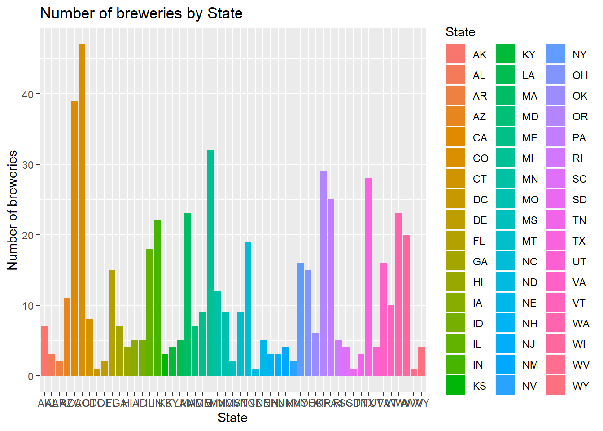
# Question 2.Merge beer data with the breweries data. Print the first 6 observations and the last six observations to check the merged file. (RMD only, this does not need to be included in the presentation or the deck.)
#Solution
#Step 1 Left join Beers data with Breweries data based on the column "Brewery_id" in Breweries data set and "Brew_ID" in Beer data set
Beer_Breweries_raw <- left_join(beers_raw, breweries_raw, by = c("Brewery_id" = "Brew_ID" ), all = TRUE )
#Step 2 Rename the columns of the merged dataset for better understanding
colnames(Beer_Breweries_raw) <- c('Beer_Name', 'Beer_Id', 'ABV', 'IBU', 'Brewery_Id', 'Beer_Style', 'Ounces','Brewery_Name', 'City','State')
#Step 3 Printe first 6 rows of the data
head(Beer_Breweries_raw)#Step 4 Print last 6 rows of the data
tail(Beer_Breweries_raw)#Question 3. Address the missing values in each column.
#Solution
#Check which columns of the data set have null values
as.data.frame(lapply(Beer_Breweries_raw,function(x) { length(which(is.na(x)))}))#Create a dataframe to hold the column names with null values and the corresponding counts
Missing_Values <- data.frame(Measure = c("ABV_Missing","IBU_Missing", "Total_#_Rows") , Number_of_Values = c(62,1005,2410))
#Create a plot to show the number of nulls in each column compared to the total number of rows in the data set.
ggplot(data= Missing_Values) + geom_bar(mapping = aes(x= Measure, y= Number_of_Values, fill= Measure), stat="identity") + xlab("Measure") +
ylab("Number of Values") + ggtitle("Number of missing values compared to the total number of rows")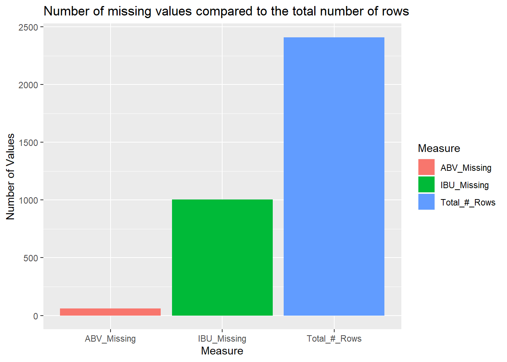
message("From the plot we see that the column ABV has 62 missing values and IBU has 1005 missing values.There's no other missing data.")## From the plot we see that the column ABV has 62 missing values and IBU has 1005 missing values.There's no other missing data.message(" The number of missing values is huge so we cannot just filter out the data. We have to replace the missing values with some meaningful data.") ## The number of missing values is huge so we cannot just filter out the data. We have to replace the missing values with some meaningful data.#Step 2 Address missing values in column ABV
message(" Factors that affect a beer's ABV and IBU - State the beer comes from and it's style")## Factors that affect a beer's ABV and IBU - State the beer comes from and it's style#Looking at beer distribution by State
ggplot(Beer_Breweries_raw) + geom_bar(mapping = aes(x=State, fill = State)) +
ggtitle("Number of differnt Beers by State") + ylab("Number of different beers")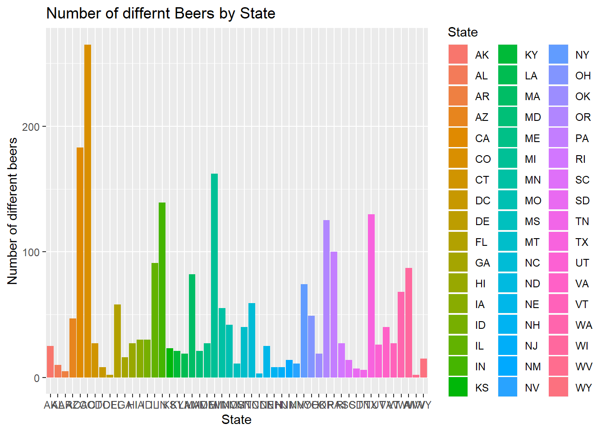
message("Looking at the beer distribution by State, we see that the data is not equally distributed. So, we do not want to consider State as a factor to calculate missing values. We will consider only Beer Category- based on beer style")## Looking at the beer distribution by State, we see that the data is not equally distributed. So, we do not want to consider State as a factor to calculate missing values. We will consider only Beer Category- based on beer style#Looking at ABV and IBU data to check if there are any outliers
#ABV distribution
boxplot(Beer_Breweries_raw$ABV, staplewex = 1, main = "Distribution of ABV", ylab = "ABV")
text(y = boxplot.stats(Beer_Breweries_raw$ABV)$stats, labels = boxplot.stats(Beer_Breweries_raw$ABV)$stats, x = 1.25)
#IBU distribution
boxplot(Beer_Breweries_raw$IBU, staplewex = 1, main = "Distribution of IBU", ylab = "IBU")
text(y = boxplot.stats(Beer_Breweries_raw$ABV)$stats, labels = boxplot.stats(Beer_Breweries_raw$ABV)$stats, x = 1.25)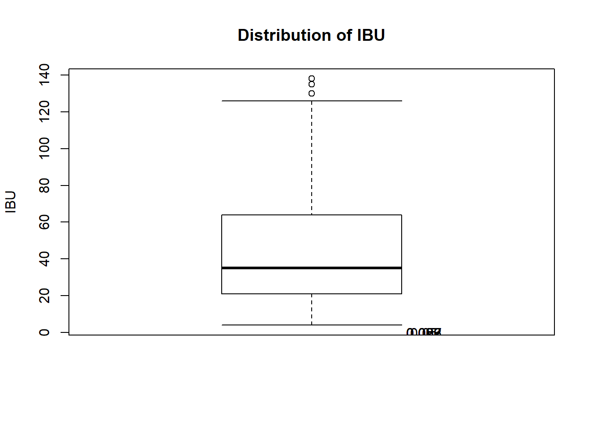
message("As the data has outliers and the mean is sensitive to outliers, we will replace the missing values by the corresponding median in each Beer Category")## As the data has outliers and the mean is sensitive to outliers, we will replace the missing values by the corresponding median in each Beer Category#Assigning Beer Categories: Read the Beer_Style and assign the following categories: IPA- if the column Beer Style has IPA in its name, else 'Other Ales' if name has 'Ale' in its name and assign 'Other' to all the other types of beers.
Beer_Breweries_raw$Beer_Category <- ifelse(str_detect(Beer_Breweries_raw$Beer_Style, "IPA"), 'IPA', ifelse(str_detect(Beer_Breweries_raw$Beer_Style, "Ale"),'Other Ale','Other'))
#Calculate median ABV for each Beer categy.
Median_ABV_by_St_IPAorAle <- Beer_Breweries_raw%>% group_by(Beer_Category) %>% summarise(Median_ABV = median(ABV, na.rm=TRUE))
#Join the Median_ABV data by State and Beer_Category with the Beer_Breweries_raw data set
Beer_Breweries_raw_withMedianABV <-left_join(Beer_Breweries_raw,Median_ABV_by_St_IPAorAle, by = c("Beer_Category") )
# Create a new column ABV_New containing ABV values and replacing missing values by the above calculated median ABV
Beer_Breweries_raw_withMedianABV$ABV_New <- ifelse(is.na(Beer_Breweries_raw_withMedianABV$ABV), Beer_Breweries_raw_withMedianABV$Median_ABV, Beer_Breweries_raw_withMedianABV$ABV)
#Calculate the median IBU grouping by Beer_Category.
Median_IBU_by_St_IPAorAle_ABV_CAT <- Beer_Breweries_raw_withMedianABV%>% group_by( Beer_Category ) %>% summarise(Median_IBU = median(IBU, na.rm=TRUE))
##Join the Median_IBU data by State, IPA/Ale category and ABV category with the data set above
Beer_Breweries_raw_withMedianABV_IBU <- left_join(Beer_Breweries_raw_withMedianABV,Median_IBU_by_St_IPAorAle_ABV_CAT, by = c("Beer_Category") )
# Create a new column IBU_New containing IBU values and replacing missing values by the above calculated median IBU
Beer_Breweries_raw_withMedianABV_IBU$IBU_New <- ifelse(is.na(Beer_Breweries_raw_withMedianABV_IBU$IBU), Beer_Breweries_raw_withMedianABV_IBU$Median_IBU, Beer_Breweries_raw_withMedianABV$IBU)
#Filter out the missing values and remove the redundant columns
Beer_Breweries_Clean <- filter(Beer_Breweries_raw_withMedianABV_IBU, !is.na(IBU_New)) %>% select( -Median_ABV, -Median_IBU)
# Step 5 Check the cleansed data to see if we still have any missing data. Look for ABV_New and IBU_New
as.data.frame(lapply(Beer_Breweries_Clean,function(x) { length(which(is.na(x)))}))message("As we do not have any missing values in the columns ABV_New and IBU_new, Beer_Breweries_Clean is the dataset we'll be doing further analysis on using the columns ABV_New and IBU_New")## As we do not have any missing values in the columns ABV_New and IBU_new, Beer_Breweries_Clean is the dataset we'll be doing further analysis on using the columns ABV_New and IBU_New#Question 4.Compute the median alcohol content and international bitterness unit for each state. Plot a bar chart to compare.
#Analysis on Cleansed data
#Step 1 Calculate the median ABV by State
#Step 1.1 Group by State and Summarise
Answer4_Median_ABV <- Beer_Breweries_Clean %>% group_by(State) %>%
summarise(Median = median(ABV_New, na.rm = TRUE))
#Step 1.2 Convert ABV to percentage (multiple by 100) for a more clear plot
Answer4_Median_ABV$Median = Answer4_Median_ABV$Median * 100
#Step 1.3 Create a dataframe with columns Median (calculated above) and a column 'Measure' with it's value as 'ABV%'
Answer4_Median_ABV$Measure = "ABV%"
#Step 2 Calculate the median IBU by State
#Step 2.1 Group by State and Summarise
Answer4_Median_IBU <- Beer_Breweries_Clean %>% group_by(State) %>%
summarise(Median = median(IBU_New, na.rm = TRUE))
#Step 2.2 Create a dataframe with columns Median (calculated above) and a column 'Measure' wit it's value as 'IBU'
Answer4_Median_IBU$Measure = "IBU"
#Step 3 Combine the baove created data frame to have Median ABV% abd IBU in one data frame
Answer4 <- rbind(Answer4_Median_ABV,Answer4_Median_IBU )
#Step 4 Plot the bar chart
ggplot(Answer4) + geom_bar(mapping= aes(x=State, y=Median, fill = Measure), stat= "identity", position = "dodge") + ggtitle("Median ABV and IBU by each State")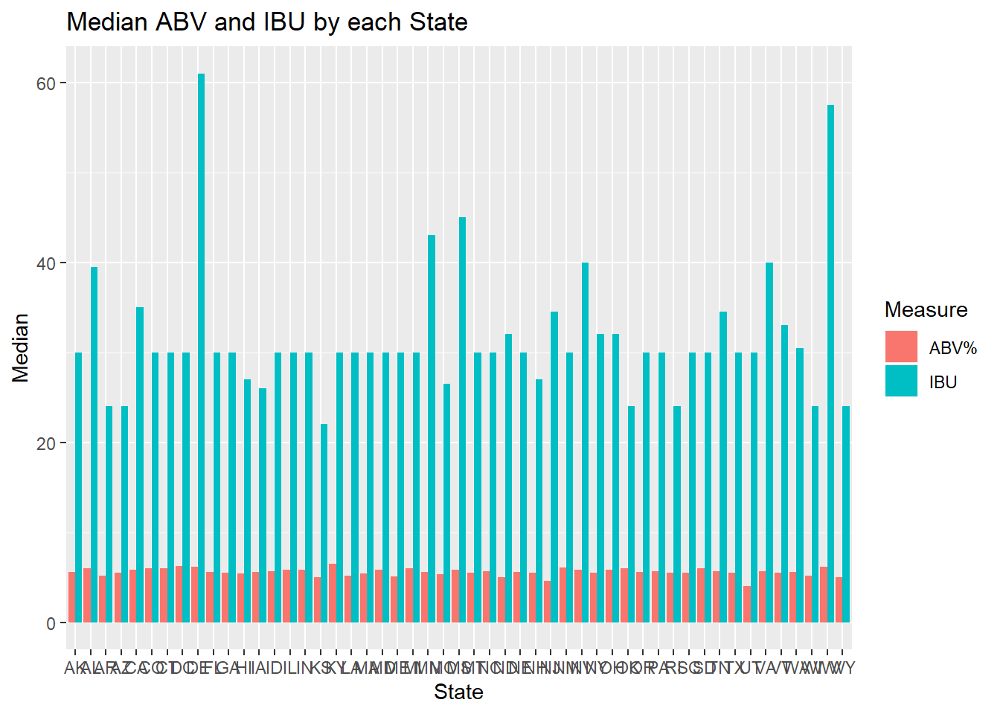
#Analysis on Raw data
#Step 1 Calculate the median ABV by State
#Step 1.1 Group by State and Summarise
Answer4_Median_ABV <- Beer_Breweries_Clean %>% group_by(State) %>%
summarise(Median = median(ABV, na.rm = TRUE))
#Step 1.2 Convert ABV to percentage (multiple by 100) for a more clear plot
Answer4_Median_ABV$Median = Answer4_Median_ABV$Median * 100
#Step 1.3 Create a dataframe with columns Median (calculated above) and a column 'Measure' wit it's value as 'ABV%'
Answer4_Median_ABV$Measure = "ABV%"
#Step 2 Calculate the median IBU by State
#Step 2.1 Group by State and Summarise
Answer4_Median_IBU <- Beer_Breweries_Clean %>% group_by(State) %>%
summarise(Median = median(IBU, na.rm = TRUE))
#Step 2.2 Create a dataframe with columns Median (calculated above) and a column 'Measure' wit it's value as 'IBU'
Answer4_Median_IBU$Measure = "IBU"
#Step 3 Combine the baove created data frame to have Median ABV% abd IBU in one data frame
Answer4 <- rbind(Answer4_Median_ABV,Answer4_Median_IBU )
#Step 4 Plot the bar chart
ggplot(Answer4) + geom_bar(mapping= aes(x=State, y=Median, fill = Measure), stat= "identity", position = "dodge") + ggtitle("Median ABV and IBU by each State - Raw data")## Warning: Removed 1 rows containing missing values (geom_bar).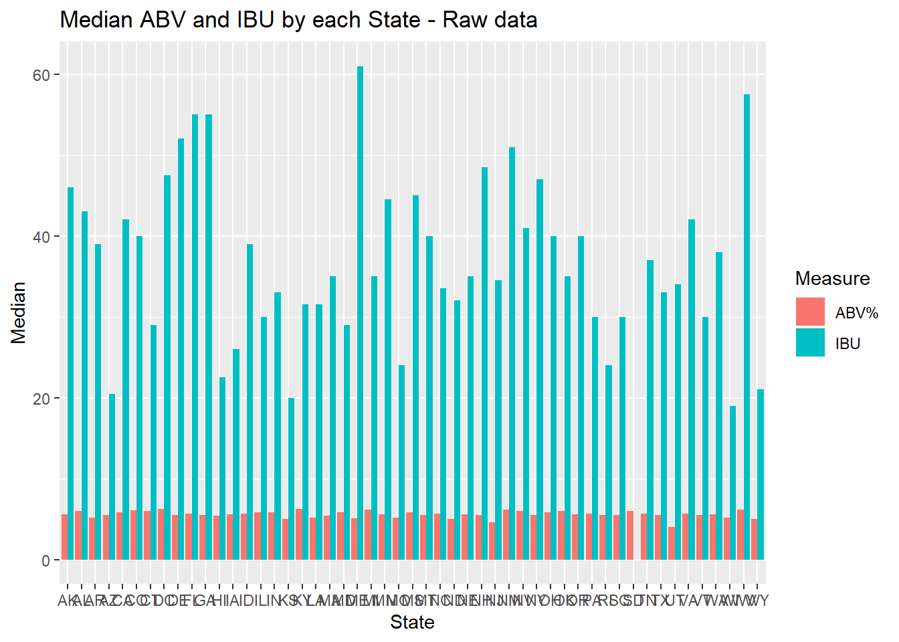
message("As we see that in Cleansed data, WV has the highest Median IBU, whereas in the raw data ME has the highest median IBU. Let's deep dive into ME data")## As we see that in Cleansed data, WV has the highest Median IBU, whereas in the raw data ME has the highest median IBU. Let's deep dive into ME data#Select only the ME data from the entire data set
Beer_Breweries_Clean_ME <- filter(Beer_Breweries_Clean, State=='ME')
#Check which rows have missing IBU
Beer_Breweries_Clean_ME$IBU_Rows <- ifelse(is.na(Beer_Breweries_Clean_ME$IBU), "Missing", "Has Data")
#Plot a gar char of the missing data
ggplot(Beer_Breweries_Clean_ME) + geom_bar(mapping= aes( x=IBU_Rows, fill=IBU_Rows)) + ggtitle("Comparing number of missing IBU Values for ME in raw data") +
xlab("IBU Missing or Not") + ylab("Total Rows")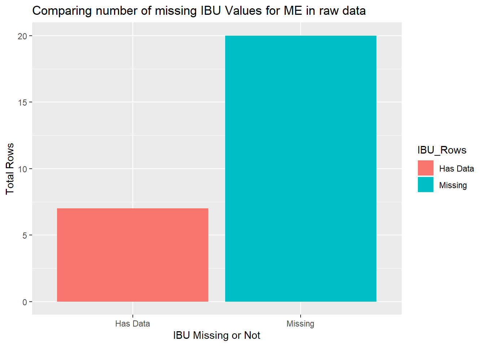
message(" We see that out of 27 rows for ME data, 20 have missing data in the raw data set. Thus the cleansed data is more reliable")## We see that out of 27 rows for ME data, 20 have missing data in the raw data set. Thus the cleansed data is more reliable#Question 5. Which state has the maximum alcoholic (ABV) beer? Which state has the most bitter (IBU) beer?
#Solution
#Max ABV
#Calculate max ABV by each state
max_alc_content <-Beer_Breweries_Clean %>% group_by(State) %>% summarise(Max_Alcohol_Content = max(ABV_New, na.rm = TRUE))
#Plot the data
ggplot(max_alc_content) + geom_bar(mapping= aes(x= State,y= Max_Alcohol_Content, fill= State), stat= "identity") + ggtitle("Maximum alcohol content in each state") + ylab("Max Alcohal Content")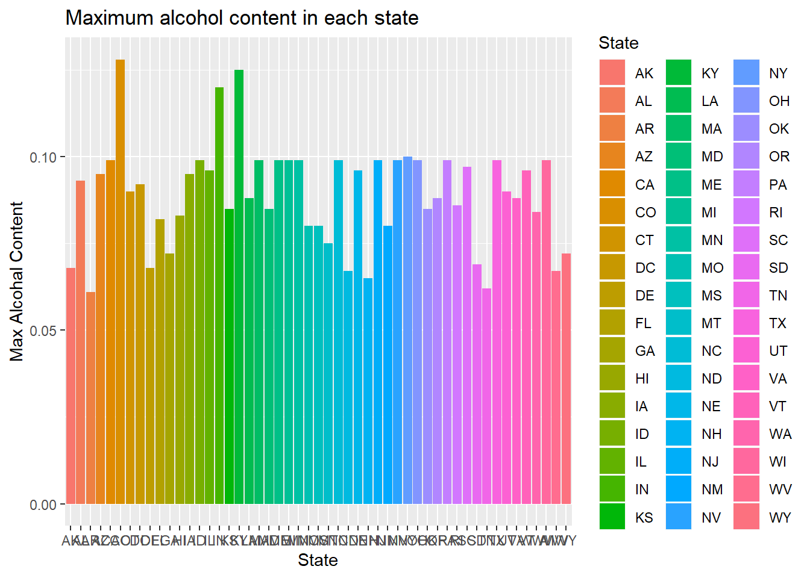
message(" State with Maximum alcoholic beer is CO")## State with Maximum alcoholic beer is CO#Max IBU: Most bitter beer
#Calculate max IBU by each state
max_IBU_content <-Beer_Breweries_Clean %>% group_by(State) %>% summarise(Max_IBU = max(IBU_New, na.rm = TRUE))
#Plot the data
ggplot(max_IBU_content) + geom_bar(mapping= aes(x= State,y= Max_IBU, fill= State), stat= "identity") + ggtitle("Maximum IBU in each State") + ylab("Max IBU Content")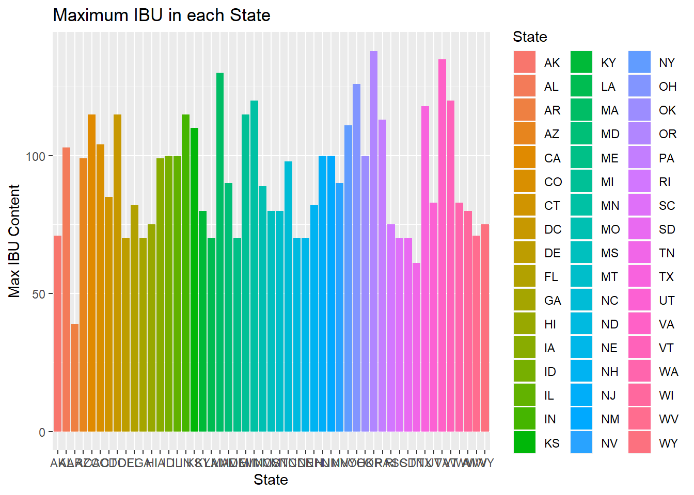
message(" State with most bitter beer is OR")## State with most bitter beer is OR#Question 6. Comment on the summary statistics and distribution of the ABV variable.
#Run a summary on the cleansed ABV column
summary(Beer_Breweries_Clean$ABV_New)## Min. 1st Qu. Median Mean 3rd Qu. Max.
## 0.00100 0.05000 0.05600 0.05969 0.06700 0.12800#ABV Density Plot
d <- density(Beer_Breweries_Clean$ABV_New)
plot(d, main = "Distribution of ABV" , xlab="ABV" )
lines(density(Beer_Breweries_Clean$ABV_New), # density plot
lwd = 2, # thickness of line
col = "chocolate3")
abline(v = mean(Beer_Breweries_Clean$ABV_New),
col = "royalblue",
lwd = 2)
abline(v = median(Beer_Breweries_Clean$ABV_New),
col = "red",
lwd = 2)
legend(x = "topright", # location of legend within plot area
c("Density plot", "Mean=0.0597", "Median=0.056"),
col = c("chocolate3", "royalblue", "red"),
lwd = c(2, 2, 2))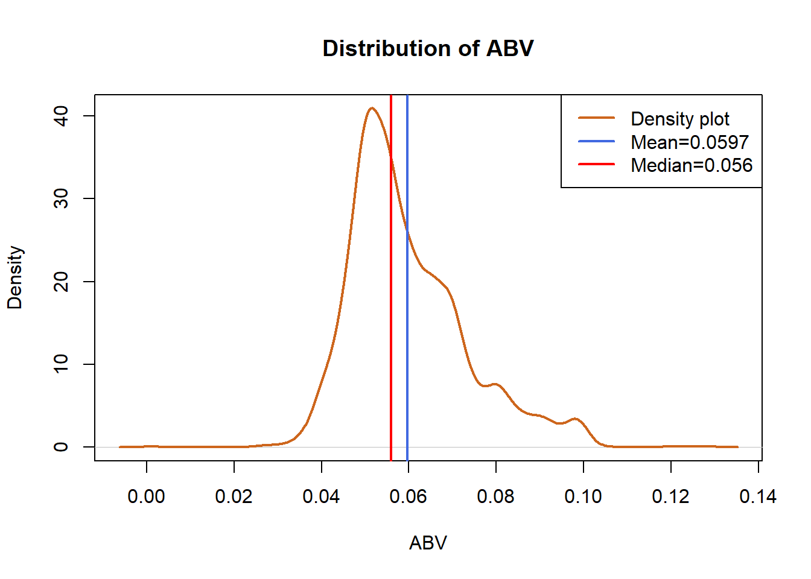
#ABV box plot
boxplot(Beer_Breweries_Clean$ABV, staplewex = 1, main = "Distribution of ABV", ylab = "ABV")
text(y = boxplot.stats(Beer_Breweries_Clean$ABV)$stats, labels = boxplot.stats(Beer_Breweries_Clean$ABV)$stats, x = 1.25)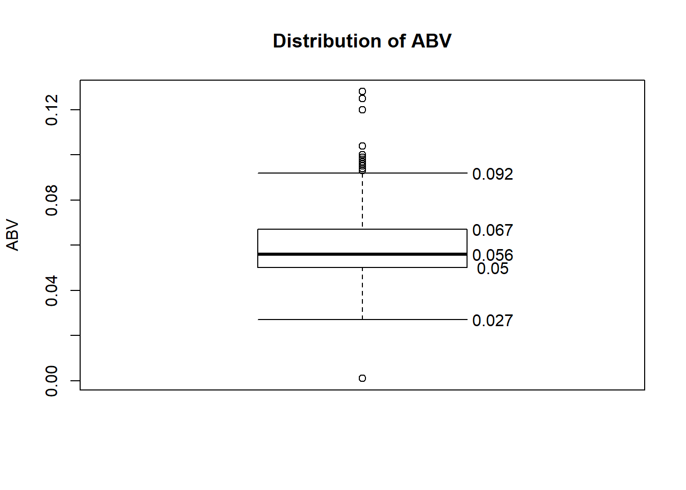
#Question# 7
#Create a Scatter plot of the data by ABV vs. IBU
ggplot( data = Beer_Breweries_Clean) + geom_point(mapping = aes(x = ABV_New, y = IBU_New)) +
geom_smooth(mapping = aes(x = ABV_New, y = IBU_New)) + ggtitle("Relationship between ABV and IBU") +
xlab("ABV") + ylab("IBU")## `geom_smooth()` using method = 'gam' and formula 'y ~ s(x, bs = "cs")'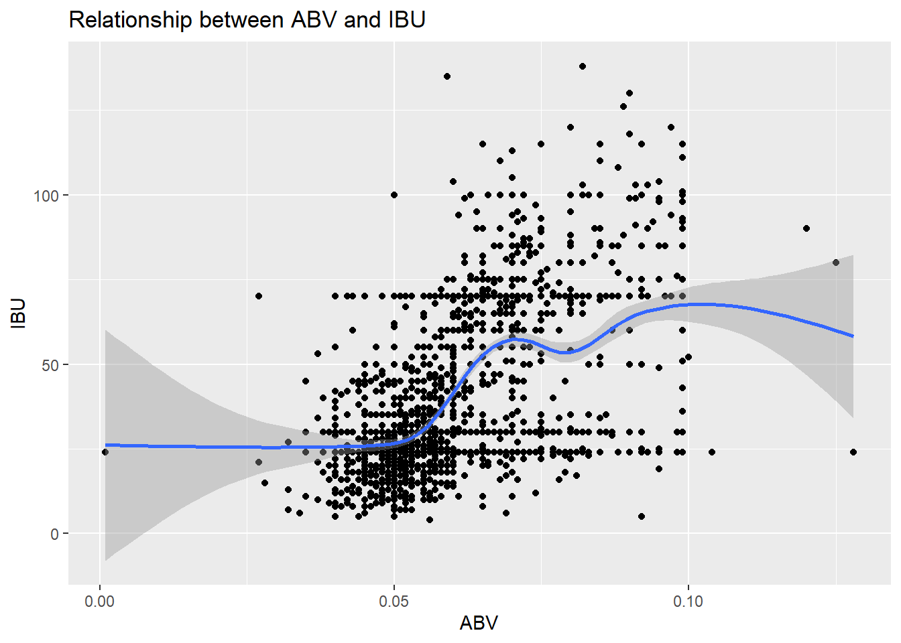
#Also find the correlation factor between ABV and IBU
library("ggpubr")
ggscatter(Beer_Breweries_Clean, x = "ABV_New", y = "IBU_New",
add = "reg.line", conf.int = TRUE,
cor.coef = TRUE, cor.method = "pearson",
xlab = "Alcohol Content", ylab = "Bitterness", color="blue") +
ggtitle("Correlation between a beer's bitterness and it's alcoholic content")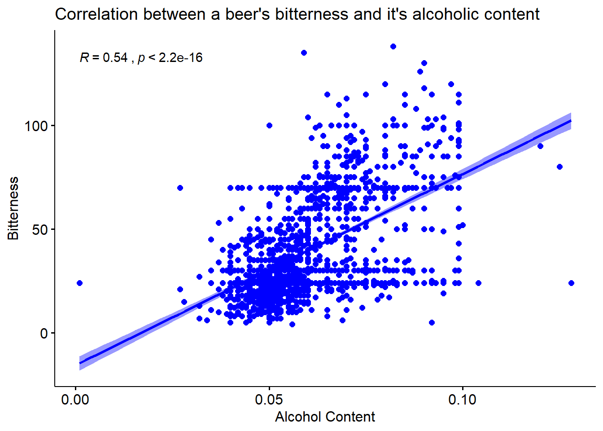
#Question 8: Find the correlation between ABV and IBU and IPA vs. Other Ales
#Filter the data to include only IPA and Other Ales
Beer_Breweries_Clean_8 <- Beer_Breweries_Clean %>% filter(Beer_Category %in% c("IPA", "Other Ale"))
#Plot the data
ggplot( data = Beer_Breweries_Clean_8) + geom_point(mapping = aes(x = ABV_New, y = IBU_New)) +
geom_smooth(mapping = aes(x = ABV_New, y = IBU_New)) + xlab("ABV") + ylab("IBU") +
facet_wrap(~Beer_Category) + ggtitle("Correlation between a beer's IBU and ABV by beer category -IPA vs. Other Ales")## `geom_smooth()` using method = 'loess' and formula 'y ~ x'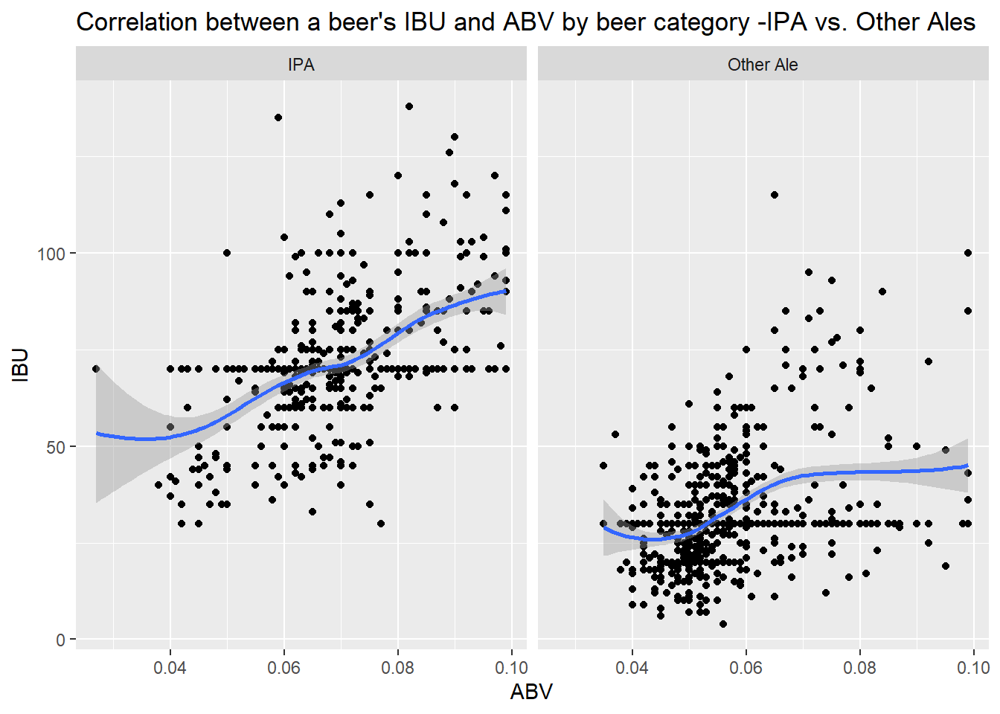
#Additional comparision of ABV and IBU by beer categories using ggpairs
Beer_Breweries_Clean_8 %>% select(ABV_New, IBU_New,Beer_Category) %>%
ggpairs(aes(color=Beer_Category) ,title="ABV vs. IBU by IPA vs. Other Ales")## `stat_bin()` using `bins = 30`. Pick better value with `binwidth`.## `stat_bin()` using `bins = 30`. Pick better value with `binwidth`.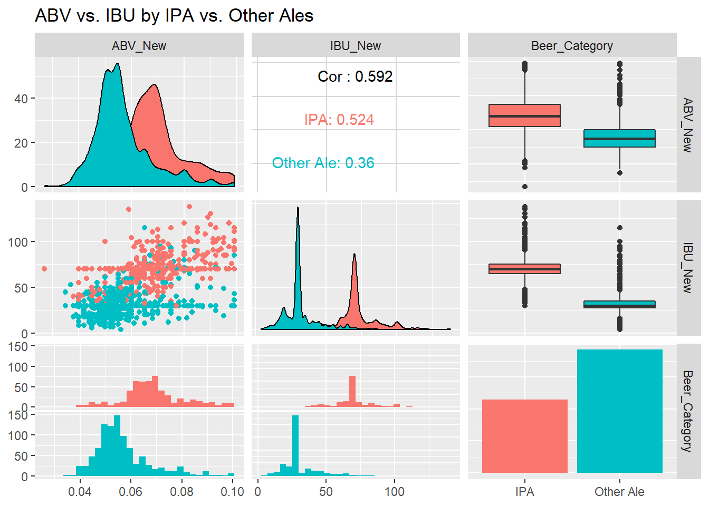
message("We can see from the plot that the IPAs have a higher median ABV and IBU compared to Other Ales. Most of the beers with higher ABV and IBU fall in IPA beer Category, whereas the Other Ales have comparatively lower ABV and IBU.")## We can see from the plot that the IPAs have a higher median ABV and IBU compared to Other Ales. Most of the beers with higher ABV and IBU fall in IPA beer Category, whereas the Other Ales have comparatively lower ABV and IBU.#Build KNN data model to analyze Beer Categories
#Filter the data to limit it to IPA and Other Ale beer categories, and also select only the columns required for analysis
Beer_Breweries_8_knn_data <- Beer_Breweries_Clean %>% filter(Beer_Category %in% c("IPA", "Other Ale")) %>% select(Beer_Id,Beer_Name, ABV_New,IBU_New, Beer_Category)
#Create a placeholder for Accuracy
Acc= matrix(nrow=100, ncol=100)
#For loop to create 100 different training and test data sets
for(seed in 1:100) {
set.seed(seed)
trainIndices = sample(seq(1:length(Beer_Breweries_8_knn_data$Beer_Category)), round(.7*length(Beer_Breweries_8_knn_data$Beer_Category)))
trainBew_Brewries = Beer_Breweries_8_knn_data[trainIndices,]
testBew_Brewries = Beer_Breweries_8_knn_data[-trainIndices,]
#For loop to run KNN model for k=1-100
for( i in 1:100) {
knn1 <- knn(trainBew_Brewries[, c(3,4)],testBew_Brewries[, c(3,4)], trainBew_Brewries$Beer_Category, k = i )
t_knn <- table(knn1,testBew_Brewries$Beer_Category )
#Create confusion matrix
Cm_Knn <- confusionMatrix(t_knn)
#Captures Accuracy
Acc[seed,i] = Cm_Knn$overall[1]
}
}
#Caluclate mean accuracy for each of the seed/knn iteritions
mean_Acc = colMeans(Acc)
#Plot the data by knnvalue and accuracy
plot(seq(1,100,1),mean_Acc, type = "l", xlab ='k', main = "Mean Accuracy by differnt values of k" )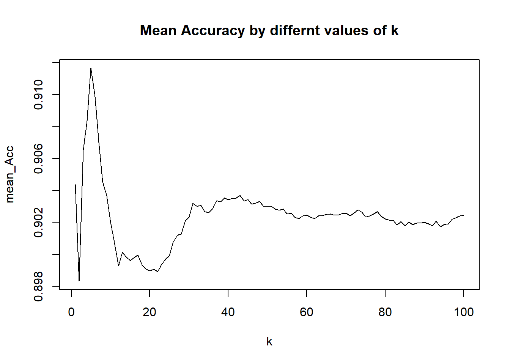
#See where we had the max accuracy
which.max(mean_Acc)## [1] 5#Print the max accuracy of the model
max(mean_Acc)## [1] 0.9116522message("By running KNN for different samples and different values of K, we can see the knn model accuracy is highest at k=5. So performing internal validation at KNN at k=5")## By running KNN for different samples and different values of K, we can see the knn model accuracy is highest at k=5. So performing internal validation at KNN at k=5#Perform internal validation with knn with knn=3
knn5 <- knn.cv(Beer_Breweries_8_knn_data[, c(3,4)],Beer_Breweries_8_knn_data$Beer_Category, k=5 )
t_knn <- table(knn5,Beer_Breweries_8_knn_data$Beer_Category )
Cm_Knn <- confusionMatrix(t_knn)
#Train the model with knn analysis
model_knn <- train(Beer_Breweries_8_knn_data[, c(3,4)], Beer_Breweries_8_knn_data$Beer_Category, method='knn')
#Predict the beer categories using the model
Beer_Breweries_8_knn_data$Knn_New <-as.factor(predict(model_knn,Beer_Breweries_8_knn_data[, c(3,4)]))
#Question 9: Check for misclassification of beers
#Compare the Beer Category assignment by knn Model vs. the provided Budweiser data
Mismatched_data <- filter(Beer_Breweries_8_knn_data,Beer_Breweries_8_knn_data$Knn_New != Beer_Breweries_8_knn_data$Beer_Category)
#No of rows of mismatched data
nrow(Mismatched_data)## [1] 119#Plot the total mismatched data
#Plor beer categories by Budweiser asssignment
ggplot(Beer_Breweries_8_knn_data) + geom_bar(mapping = aes(x = Beer_Category, fill= Beer_Category)) +
ylab("Number of Beers") + ggtitle("Beer Count by Budweiser Categories")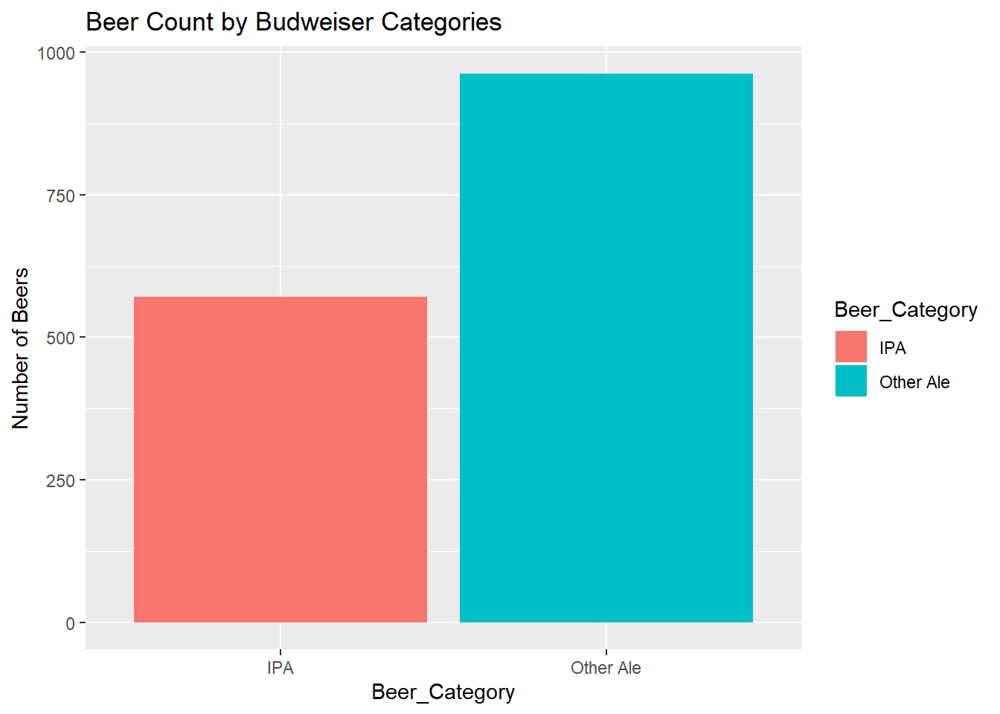
#Plor beer categories by KNN asssignment
ggplot(Beer_Breweries_8_knn_data) + geom_bar(mapping = aes(x = Knn_New, fill= Knn_New))+
ylab("Number of Beers") + xlab("Beer Category by KNN Classification")+ ggtitle("Beer Count by KNN Classification")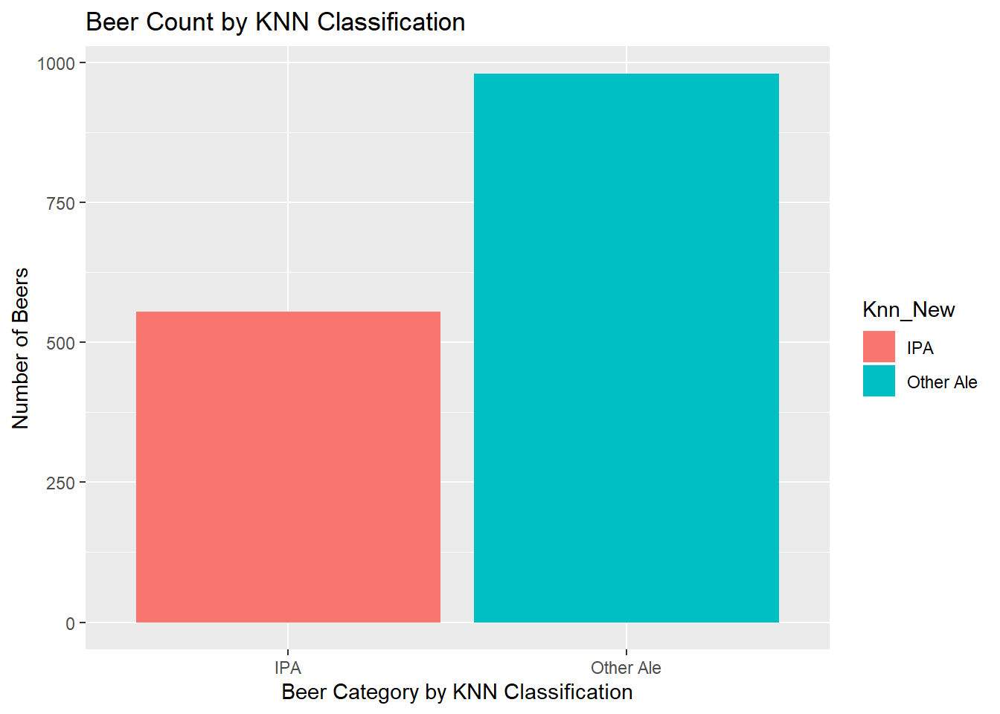
#Find the number of beer misclassified as IPA
nrow(filter(Mismatched_data, Beer_Category == "IPA" ))## [1] 68#Find the number of beer misclassified as Other Ales
nrow(filter(Mismatched_data, Beer_Category != "IPA" ))## [1] 51message("We can see that around 68 beers were misclassified as 'IPA' and 51 were misclassified as 'Other Ale' ")## We can see that around 68 beers were misclassified as 'IPA' and 51 were misclassified as 'Other Ale'#Print a few samples of the mismatched data
#Top 6
head(Beer_Breweries_8_knn_data)#Bottm 6
tail(Beer_Breweries_8_knn_data)#Run a summary of the data set
summary(Beer_Breweries_8_knn_data)## Beer_Id Beer_Name ABV_New
## Min. : 1.0 Nonstop Hef Hop : 12 Min. :0.02700
## 1st Qu.: 783.2 Dale's Pale Ale : 6 1st Qu.:0.05200
## Median :1450.0 Dagger Falls IPA : 3 Median :0.06000
## Mean :1421.1 312 Urban Pale Ale : 2 Mean :0.06123
## 3rd Qu.:2071.2 312 Urban Wheat Ale: 2 3rd Qu.:0.06900
## Max. :2692.0 Alter Ego : 2 Max. :0.09900
## (Other) :1507
## IBU_New Beer_Category Knn_New
## Min. : 4.00 Length:1534 IPA :554
## 1st Qu.: 30.00 Class :character Other Ale:980
## Median : 36.00 Mode :character
## Mean : 46.95
## 3rd Qu.: 70.00
## Max. :138.00
## Beer_Breweries_8_knn_data$Beer_Category<- as.factor(Beer_Breweries_8_knn_data$Beer_Category)
#colnames(Beer_Breweries_8_knn_data$Knn_New.predict(model_knn, Beer_Breweries_8_knn_data[, c(3, 4)])) <- c("Beer_Category_knn")
#Check Budweisers classification of beer from mismatched data
filter(Beer_Breweries_Clean, Beer_Id %in% c(2602, 2105, 1021, 1930)) %>% select(Beer_Id,Beer_Name,ABV_New,IBU_New,Beer_Style)#Check Beer categories for beers with ABV = 0.050 & IBU_New = 45
invaid_class <- filter(Beer_Breweries_Clean, ABV_New == 0.050 & IBU_New == 45 )%>% select(Beer_Id,Beer_Name,ABV_New,IBU_New,Beer_Style,Beer_Category)
#Plot the Budweised classification for beers with ABV = 0.050 & IBU_New = 45
ggplot(invaid_class) + geom_bar(mapping= aes(x= Beer_Name, fill=Beer_Category)) +
ggtitle("Budweiser's Classification of Beer with ABV= 0.050 and IBU = 45")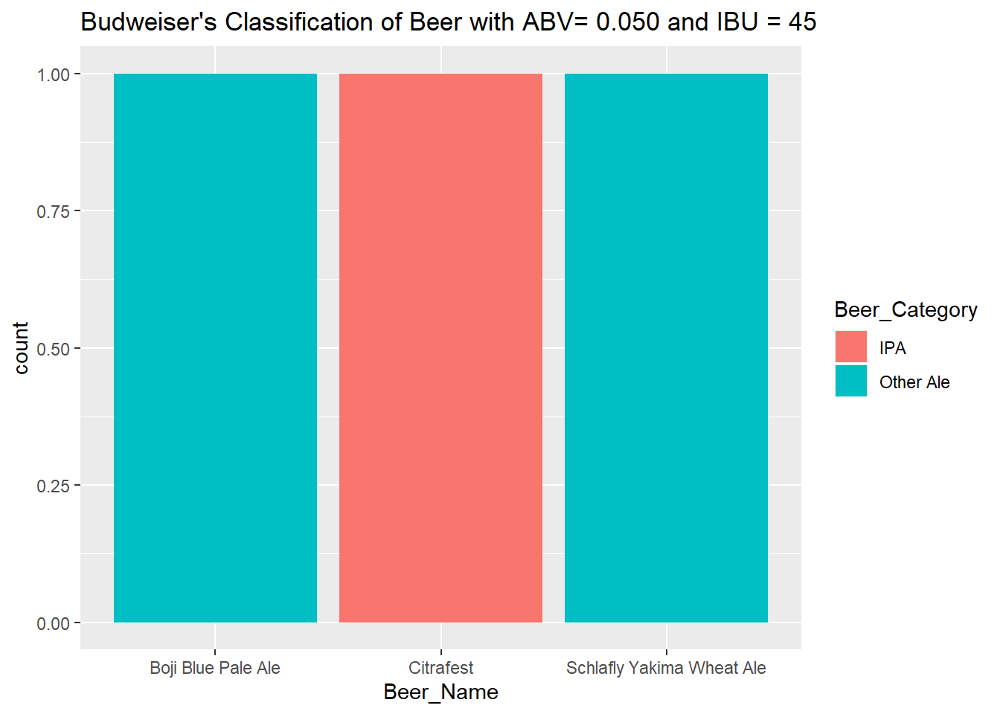
message("We see that 2 of the 3 beers with ABV=0.050 and IBU=45 were classified at Other Ales, but one was classified as IPA")## We see that 2 of the 3 beers with ABV=0.050 and IBU=45 were classified at Other Ales, but one was classified as IPAnrow(Mismatched_data)## [1] 119message("In total there are 119 beers, out of 2410, which, according to the KNN model, seem to have been incorrectly categoried as IPA or Other Ales by Budweiser")## In total there are 119 beers, out of 2410, which, according to the KNN model, seem to have been incorrectly categoried as IPA or Other Ales by Budweisermessage("Take away from the analysis:
Conflicting ‘Beer Style’ and ‘Expected Taste’ can affect the sale of the beer, so we need to correct the classifications.
82 beers are candidates for re-classification for Beer Style based on their Alcohol content and bitterness levels. The list is included below.")## Take away from the analysis:
## Conflicting ‘Beer Style’ and ‘Expected Taste’ can affect the sale of the beer, so we need to correct the classifications.
## 82 beers are candidates for re-classification for Beer Style based on their Alcohol content and bitterness levels. The list is included below.#Renaming columns for better clarity
colnames(Mismatched_data) <- c("Beer Id", "Beer Name","ABV","IBU","Budweiser_Beer_Category", "KNN_Predicted_Beer_Category")
#List of 119 beers with conflicting beer_style
print.data.frame(Mismatched_data)## Beer Id Beer Name ABV IBU
## 1 1979 Bitter Bitch 0.061 60
## 2 531 Special Edition: Allies Win The War! 0.085 52
## 3 173 Back in Black 0.068 65
## 4 2602 Citrafest 0.050 45
## 5 837 Desolation IPA 0.062 43
## 6 413 Sky High Rye 0.060 55
## 7 2105 Even Keel 0.038 40
## 8 1900 Lost Sailor IPA 0.055 40
## 9 1067 Disconnected Red 0.067 85
## 10 1456 Powder Hound Winter Ale 0.072 60
## 11 985 Bark Bite IPA 0.066 50
## 12 1898 Blackmarket Rye IPA 0.075 35
## 13 1850 American India Red Ale 0.071 83
## 14 2634 Nordskye 0.048 47
## 15 692 Blue Point White IPA 0.060 40
## 16 1891 Longhop IPA 0.042 30
## 17 1279 East India Pale Ale 0.068 47
## 18 566 East India Pale Ale 0.068 47
## 19 383 Black Adder IBA (Current) 0.073 85
## 20 28 Tule Duck Red Ale (Current) 0.062 42
## 21 2227 Dark Voyage Black IPA (2013) 0.065 80
## 22 1954 Ghost Ship White IPA 0.056 55
## 23 2094 Epitome 0.099 100
## 24 1439 Boat Beer 0.042 35
## 25 1646 Catch 23 0.075 77
## 26 2080 8 Barrel 0.080 69
## 27 2380 IPA #11 0.057 58
## 28 2013 Wandering Pelican 0.082 65
## 29 569 Tocobaga Red Ale 0.072 75
## 30 1393 Cascadian Dark Ale 0.060 75
## 31 1406 Savannah Brown Ale 0.062 55
## 32 556 Eclipse Black IPA 0.077 71
## 33 2029 Tropicalia 0.065 65
## 34 2292 Little Sister India Style Session Ale 0.043 60
## 35 2089 Trail Head 0.063 55
## 36 1664 Sobek & Set 0.080 80
## 37 935 Fascist Pig Ale 0.080 72
## 38 1223 All Day IPA 0.047 42
## 39 358 Hop Knot IPA 0.067 47
## 40 875 Fremont Summer Ale 0.065 45
## 41 2077 No Wake IPA 0.072 50
## 42 1490 Point the Way IPA 0.059 60
## 43 1296 Point the Way IPA 0.059 60
## 44 549 Point the Way IPA (2012) 0.059 60
## 45 2198 Goose Island India Pale Ale 0.059 55
## 46 2313 Mothman Black IPA 0.067 71
## 47 2007 Norm's Gateway IPA 0.040 55
## 48 2026 Pursuit 0.070 40
## 49 1653 The Long Thaw White IPA 0.062 45
## 50 1379 Harpoon IPA 0.059 42
## 51 770 Harpoon IPA (2012) 0.059 42
## 52 126 Harpoon IPA (2010) 0.059 42
## 53 2294 The Power of Zeus 0.070 68
## 54 1833 Hop Farm IPA 0.058 45
## 55 1605 Festeroo Winter Ale 0.078 60
## 56 2193 Abominable Winter Ale 0.073 70
## 57 916 Abominable Winter Ale (2012) 0.073 70
## 58 729 Midnight Ryder 0.065 80
## 59 558 I-10 IPA 0.068 55
## 60 759 Double Haul IPA (2009) 0.065 65
## 61 758 Double Haul IPA (2006) 0.065 65
## 62 86 Double Haul IPA 0.065 65
## 63 2460 India Pale Ale 0.063 65
## 64 1396 Laughing Dog IPA 0.064 66
## 65 1926 Long Trail IPA 0.059 42
## 66 1460 El Conquistador Extra Pale Ale 0.048 44
## 67 2154 Aurora 0.067 75
## 68 1492 Blazing World 0.065 115
## 69 1148 Nebraska India Pale Ale 0.065 65
## 70 2475 Slow Ride 0.045 40
## 71 2692 Get Together 0.045 50
## 72 1226 Three Skulls Ale Pale Ale 0.063 42
## 73 2335 Perpetual Darkness 0.092 72
## 74 2302 Pinner Throwback IPA 0.049 35
## 75 585 HGH (Home Grown Hops): Part Duh 0.080 70
## 76 1908 Fresh Slice White IPA 0.055 45
## 77 2630 98 Problems (Cuz A Hop Ain't One) 0.065 65
## 78 2628 Grapefruit IPA 0.050 35
## 79 711 Over the Rail Pale Ale 0.057 68
## 80 1861 BLAKKR 0.099 85
## 81 2515 Pump House IPA 0.055 45
## 82 945 Long Hammer IPA 0.065 44
## 83 583 Long Hammer IPA 0.065 44
## 84 2132 Dad 0.060 60
## 85 1771 Lil SIPA 0.050 55
## 86 1577 12th Round 0.076 78
## 87 1391 Sanitas Black IPA 0.068 65
## 88 967 Black IPA 0.071 95
## 89 1078 Schlafly IPA 0.045 30
## 90 1608 Global Warmer 0.070 70
## 91 1606 Snow King Pale Ale 0.060 55
## 92 995 Winterfest 0.084 90
## 93 1971 Texas Pale Ale (TPA) 0.055 40
## 94 1745 Mississippi Fire Ant 0.080 80
## 95 2387 Pine Belt Pale Ale 0.065 45
## 96 45 Pine Belt Pale Ale 0.065 45
## 97 2486 Baby Daddy Session IPA 0.047 35
## 98 90 Third Eye Pale Ale 0.065 65
## 99 1739 BLAKKR 0.099 85
## 100 1242 Big Nose 0.073 50
## 101 1749 Just IPA 0.046 45
## 102 1912 40 Mile IPA 0.060 50
## 103 2617 Citra Faced 0.055 64
## 104 951 Alloy 0.058 36
## 105 2444 Nugget Nectar 0.075 93
## 106 433 Greenville Pale Ale 0.055 52
## 107 2235 Day Hike Session 0.041 41
## 108 1661 Trailhead ISA 0.048 48
## 109 482 Trailhead India Style Session Ale (2011) 0.048 48
## 110 861 Cane and Ebel 0.070 68
## 111 1925 Trader Session IPA 0.040 42
## 112 2190 Campside Session IPA 0.045 50
## 113 1932 Thai Style White IPA 0.065 33
## 114 1846 Wachusett Light IPA 0.040 37
## 115 1844 Wachusett IPA 0.056 50
## 116 1029 Wachusett Light IPA (2013) 0.040 37
## 117 1550 Charlie in the Rye 0.058 55
## 118 2146 #004 Session I.P.A. 0.048 38
## 119 1513 Lights Out Vanilla Cream Extra Stout 0.077 30
## Budweiser_Beer_Category KNN_Predicted_Beer_Category
## 1 Other Ale IPA
## 2 Other Ale IPA
## 3 Other Ale IPA
## 4 IPA Other Ale
## 5 IPA Other Ale
## 6 Other Ale IPA
## 7 IPA Other Ale
## 8 IPA Other Ale
## 9 Other Ale IPA
## 10 Other Ale IPA
## 11 IPA Other Ale
## 12 IPA Other Ale
## 13 Other Ale IPA
## 14 IPA Other Ale
## 15 IPA Other Ale
## 16 IPA Other Ale
## 17 IPA Other Ale
## 18 IPA Other Ale
## 19 Other Ale IPA
## 20 Other Ale IPA
## 21 Other Ale IPA
## 22 IPA Other Ale
## 23 Other Ale IPA
## 24 IPA Other Ale
## 25 Other Ale IPA
## 26 Other Ale IPA
## 27 IPA Other Ale
## 28 Other Ale IPA
## 29 Other Ale IPA
## 30 Other Ale IPA
## 31 Other Ale IPA
## 32 Other Ale IPA
## 33 IPA Other Ale
## 34 IPA Other Ale
## 35 Other Ale IPA
## 36 Other Ale IPA
## 37 Other Ale IPA
## 38 IPA Other Ale
## 39 IPA Other Ale
## 40 Other Ale IPA
## 41 IPA Other Ale
## 42 IPA Other Ale
## 43 IPA Other Ale
## 44 IPA Other Ale
## 45 IPA Other Ale
## 46 Other Ale IPA
## 47 IPA Other Ale
## 48 IPA Other Ale
## 49 IPA Other Ale
## 50 IPA Other Ale
## 51 IPA Other Ale
## 52 IPA Other Ale
## 53 Other Ale IPA
## 54 IPA Other Ale
## 55 Other Ale IPA
## 56 Other Ale IPA
## 57 Other Ale IPA
## 58 Other Ale IPA
## 59 IPA Other Ale
## 60 IPA Other Ale
## 61 IPA Other Ale
## 62 IPA Other Ale
## 63 IPA Other Ale
## 64 IPA Other Ale
## 65 IPA Other Ale
## 66 Other Ale IPA
## 67 Other Ale IPA
## 68 Other Ale IPA
## 69 IPA Other Ale
## 70 IPA Other Ale
## 71 IPA Other Ale
## 72 Other Ale IPA
## 73 Other Ale IPA
## 74 IPA Other Ale
## 75 Other Ale IPA
## 76 IPA Other Ale
## 77 IPA Other Ale
## 78 IPA Other Ale
## 79 Other Ale IPA
## 80 Other Ale IPA
## 81 IPA Other Ale
## 82 IPA Other Ale
## 83 IPA Other Ale
## 84 Other Ale IPA
## 85 IPA Other Ale
## 86 Other Ale IPA
## 87 Other Ale IPA
## 88 Other Ale IPA
## 89 IPA Other Ale
## 90 Other Ale IPA
## 91 Other Ale IPA
## 92 Other Ale IPA
## 93 IPA Other Ale
## 94 Other Ale IPA
## 95 Other Ale IPA
## 96 Other Ale IPA
## 97 IPA Other Ale
## 98 IPA Other Ale
## 99 Other Ale IPA
## 100 IPA Other Ale
## 101 IPA Other Ale
## 102 IPA Other Ale
## 103 Other Ale IPA
## 104 IPA Other Ale
## 105 Other Ale IPA
## 106 Other Ale IPA
## 107 IPA Other Ale
## 108 IPA Other Ale
## 109 IPA Other Ale
## 110 Other Ale IPA
## 111 IPA Other Ale
## 112 IPA Other Ale
## 113 IPA Other Ale
## 114 IPA Other Ale
## 115 IPA Other Ale
## 116 IPA Other Ale
## 117 IPA Other Ale
## 118 IPA Other Ale
## 119 IPA Other AleTake away from the analysis
Conflicting ‘Beer Style’ and ‘Expected Taste’ can affect the sale of the beer, so we need to correct the classifications.
119 beers are candidates for re-classification for Beer Style based on their Alcohol content and bitterness levels.